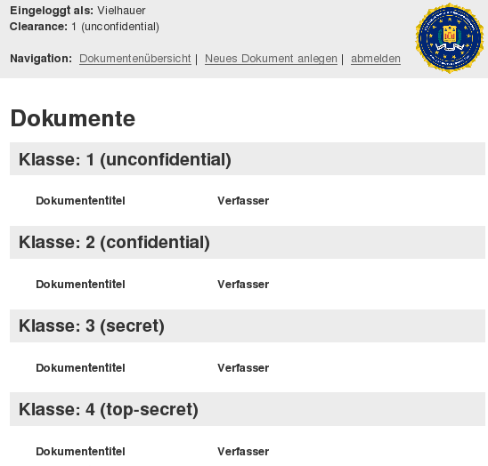
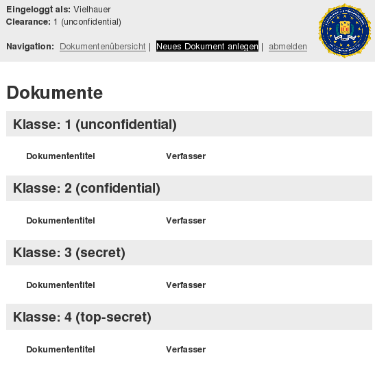
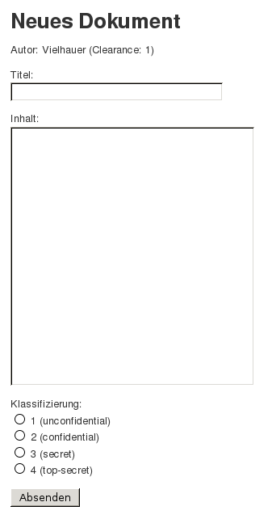
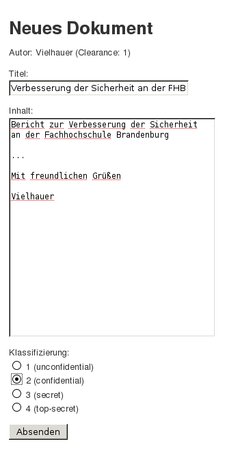
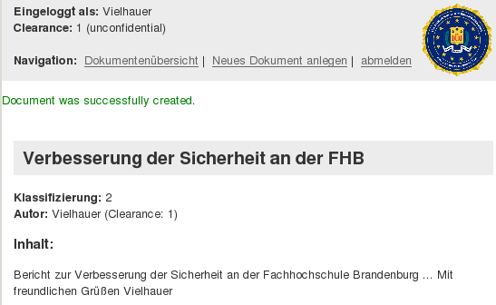
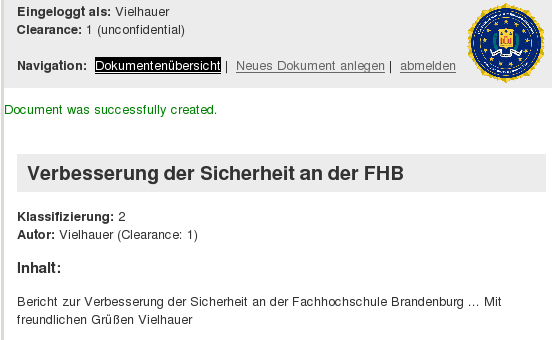
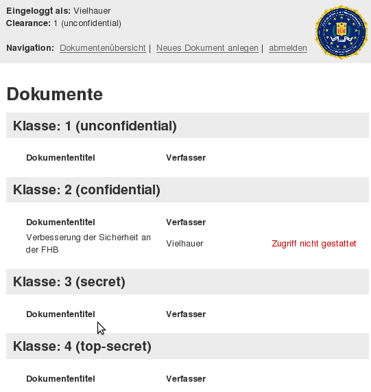
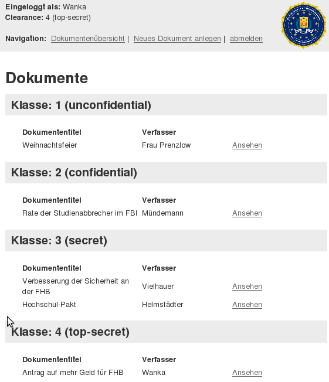

Wenn Sie ein Objekt erzeugen möchten, müssen Sie sich erst mit einen Accout einloggen. Dazu müssen Sie auf die Start- bzw. die Loginseite gehen. In diesem Beispiel melden wir uns als Subjekt "Vielhauer" an, dass wir zuvor mit dem Kennwort "viel" erstellt haben.
Wenn Sie sich erfolgreich eingeloggt haben, kommen Sie ins User-Menü. Im oberen Teil sehen Sie den Username mit dem Sie angemeldet sind und unter die Clearance die Sie besitzen, in unserem Beispiel also die "1" die für "unconfidential" steht. Nun können Sie, je nach Clearance Objekte ertellen und lesen.
Um ein Objekt zu erzeugen wählen Sie "Neues Objekt anlegen"
Es öffnet sich das untere Fenster. Wählen Sie für Ihr Objekt einen Titel und tragen Sie den Inhalt ein. Bei der Klassifizierung können Sie entsprechend dem Bell-LaPadula-Sicherheitsmodelles nur Objekte erstellen, die Ihrer oder einer höheren Clearance entspricht. Klassifizierungen die nicht möglich sind, werden rot hinterlegt und sind nicht auswählbar.
Hier als Beispiel ein ausgefülltes Formular.
Nur noch auf Absenden drücken und fertig. Als Bestätigung erscheint der untere Bildschirm in dem der Inhalt des Dokuments nochmal gezeigt wird.
Überprüfen Sie Ihre Angabe und klicken Sie auf "Dokumentenübersicht" um zurück zur Übersicht zu gelangen.
Im User-Menü erscheint jetzt das erstellte Objekt. Da die Klasse des Objektes 2 ist aber Vielhauer nur eine Clearance von 1 hat, kann er das Objekt nicht mehr einsehen.
Und so könnte es aussehen wenn man ein paar mehr Objekte erstellt hat. Da in diesem Beispiel Wanka die höchste Clearance hat, kann sie alle Dokumente einsehen.
